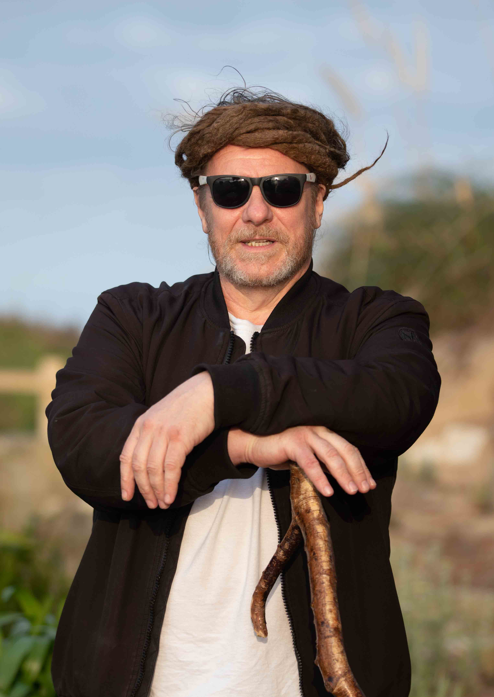

Born in Manchester in 1959, I lived there until I was 22. During this time, I ended up taking various drugs from the ages of 14 to 19. I had some bad experiences, and as a result, I ended up in a state of psychosis.
Shortly after, I moved to Wales to a place called Abererch. I had my own van with a bed and used to travel to festivals, but things got worse. The psychosis was getting more intense, and I remember crying out to God for help:
"God, if you truly exist, can you please help me? Because I have made a real, real mess of my life. And if you truly are real, please forgive me."
In that moment, I felt a warm feeling go through me, and the psychosis completely left. I gave my life to God.
